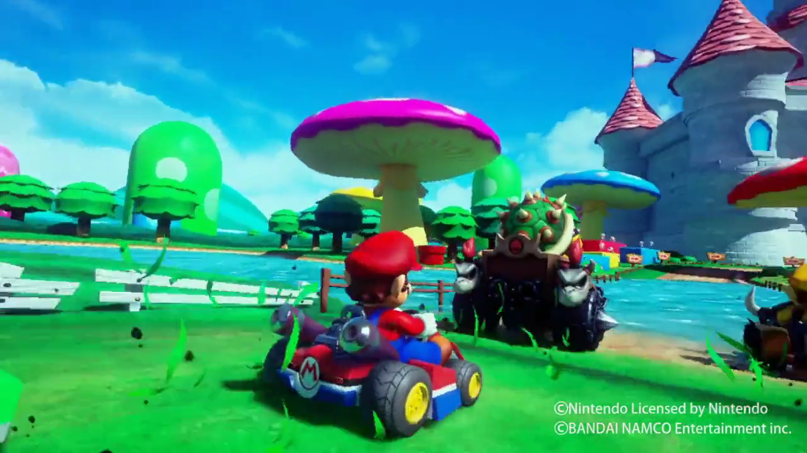

3 sierpnia 2018
Pamiętacie mój debiutancki artykuł na łamach Pixela (numer #30 z października 2017)? Rozpływałem się tam w zachwytach nad salonem gier VR Zone w tokijskiej dzielnicy Shinjuku. Jeśli nie, to nic straconego, obszerniejsza relacja znalazła się na stronach pixelposta. W każdym razie, artykuł zakończyłem optymistyczną informacją, że Bandai-Namco planuje otworzyć salony gier na całym świecie na wzór tego japońskiego.

I to właśnie się stało. Od dziś, czyli od 3 sierpnia, aby zagrać w Super Mario Kart VR nie musimy już odbywać kilkunastogodzinnego lotu międzykontynentalnego. Stanowiska VR są już dostępne znacznie bliżej - w londyńskim Hollywood Bowl mieszczącym się w hali widowiskowej O2. Niestety, salon gier na chwilę obecną oferuje wyłącznie dwa tytuły: wspomnianą wcześniej ścigałkę z Mario i Luigim, a także utrzymany w klimatach horroru "symulator wózka inwalidzkiego", czyli Hospital Escape Terror.
Oba tytuły miałem okazję ograć, po opis szczegółowych wrażeń zapraszam do podlinkowanego wyżej artykułu, tutaj na blogu. Dwa tytuły to zdecydowanie za mało, by pojechać do Londynu tylko i wyłącznie w celu odwiedzenia salonu gier. Jednak, jeśli już ktoś się tam przy okazji wybiera, to zdecydowanie polecam poświęcić tę godzinkę czy dwie na dojazd, aby przejechać się gokartem z Marianem.